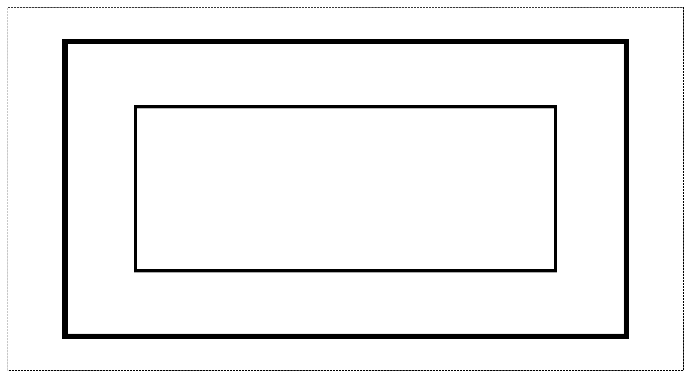
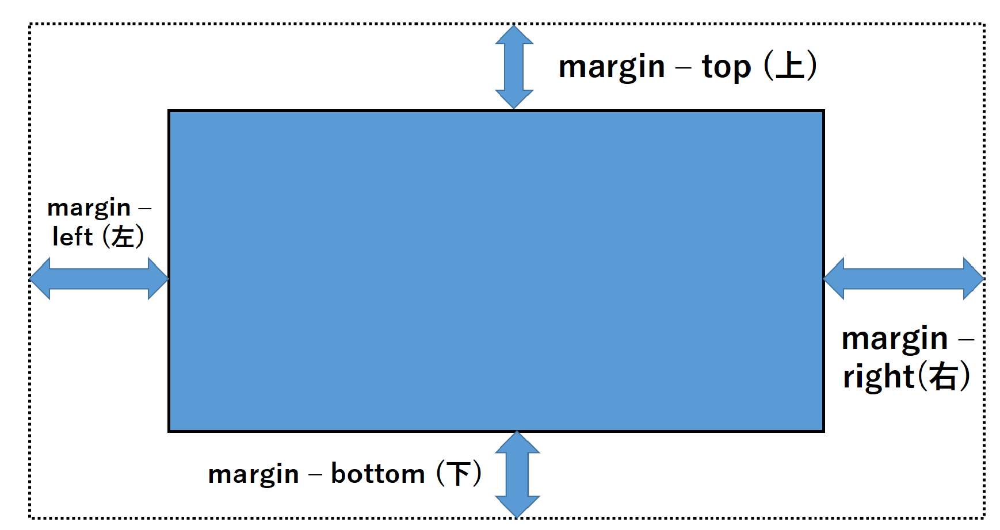
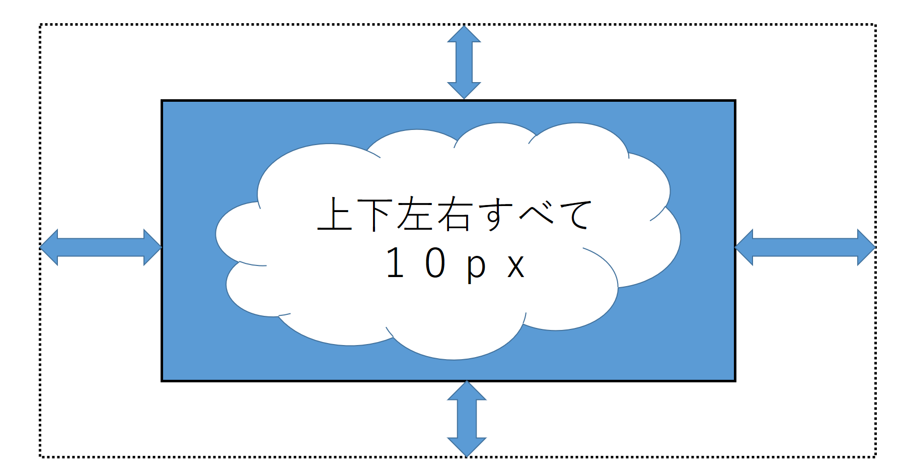
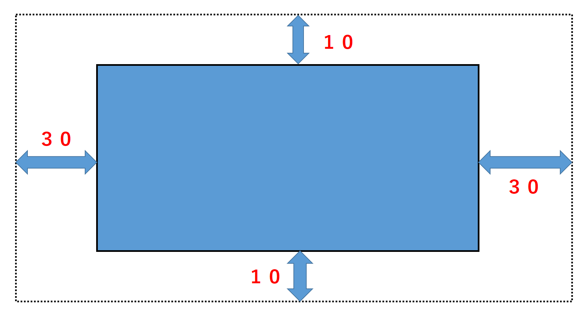
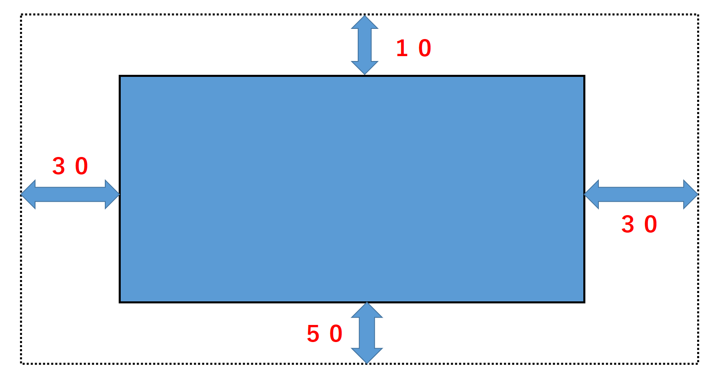
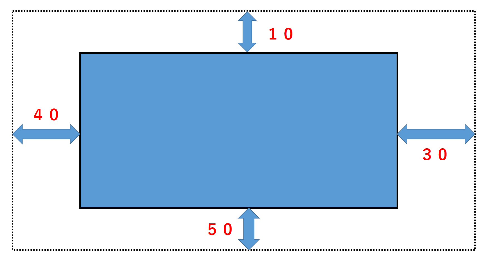

上図のように、要素を四角い箱と考えた時、その箱から他の箱までの距離をmargin、箱の端の部分から中身（この場合「要素」の文字）までの距離をpaddingという。
paddingとmarginの間の線をborderという。
 要素の周りに余白を加えるためには、"margin-top(上)"、”margin-bottom(下)”、"margin-left(左)"、"maegin-right（右）"という指定の仕方がある。
その他にも、maiginプロパティでのみで指定することもできる。
上図は上下左右全て10pxと指定している。書き方は、margin:全方向 この場合、margin:10px;
上図は上下が10px、左右が30pxと指定している。書き方は、margin:上下[半角スペースで区切る]左右 この場合、margin:10px 30px;
上図は上が10px、左右が30px、下が50pxと指定している。3つを指定している場合は、上を基点に下へ降りていく。
書き方は、margin:上[半角スペースで区切る]左右[半角スペースで区切る]下 この場合、margin:10px 30px 50px;
上図は上が10px、右が30px、下が50px、左が40pxと指定している。4つを指定している場合は、上を基点に時計回りになる。
書き方は、margin:上[半角スペースで区切る]右[半角スペースで区切る]下[半角スペースで区切る]左 この場合、margin:10px 30px 50px 40px;
paddingも同様の書き方ができる。